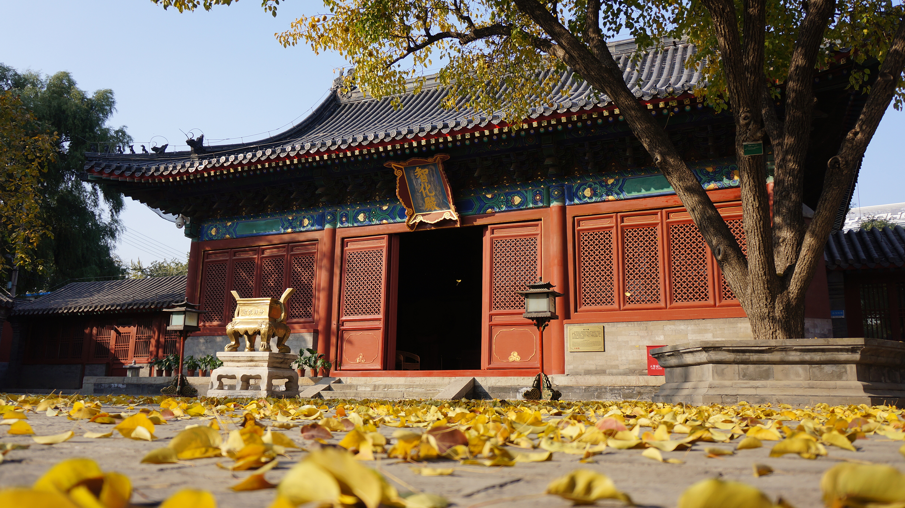
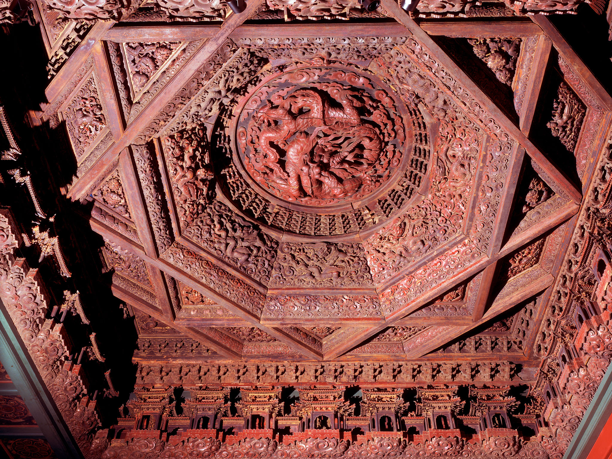
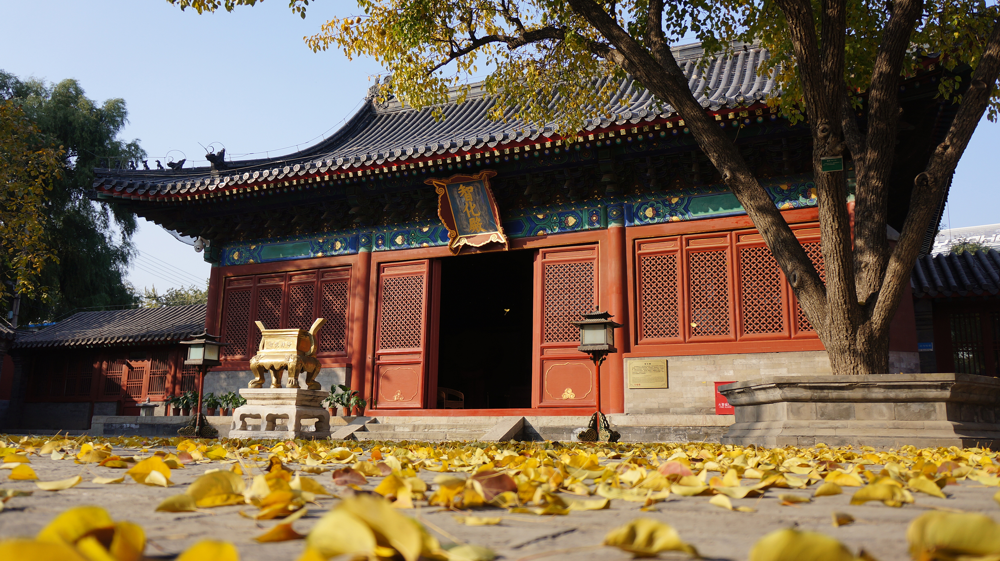
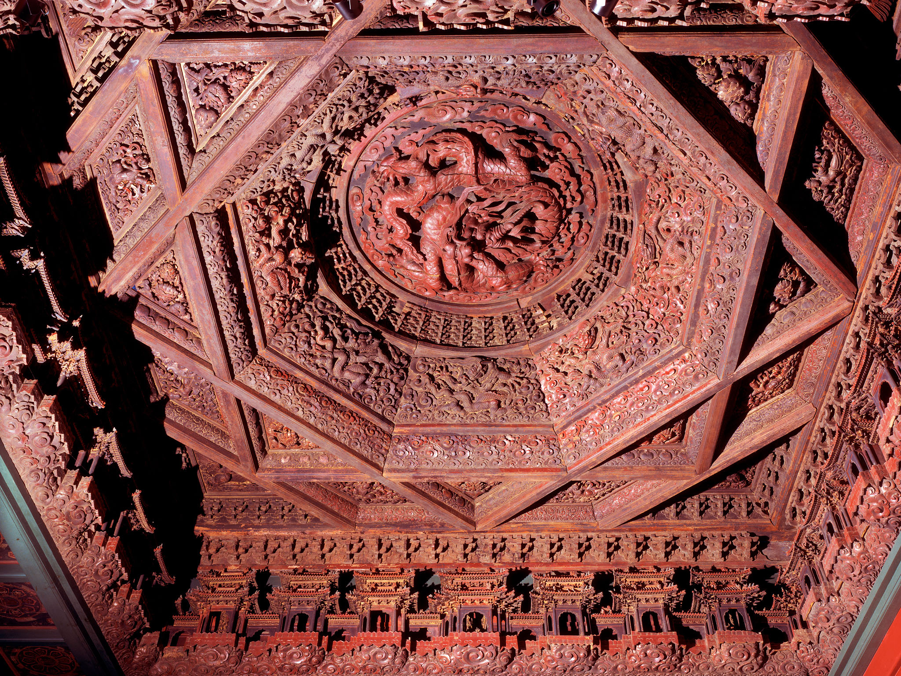

Zhihua Temple
Ceiling
Beijing, China | Ming Dynasty, 1444
Touch anywhere to explore
Buddhist ritual music from the Zhihua temple.
It has been performed at the temple since its founding in the 1400s.
Lift the device overhead to view the ceiling in details.


To learn more about the ceiling details, bring the device down to your lap.
Heavenly Beings Holding the Eight Auspicious Symbols of Buddhism
This ceiling is full of heavenly beings, each holding one of Eight Auspicious symbols of Buddhism that represent good fortune.

To learn more about the ceiling details, bring the device down to your lap.